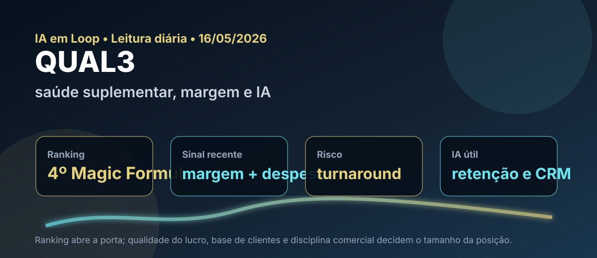

16/05: QUAL3, saúde suplementar e IA no teste de margem
Depois de PSSA3, WIZC3 e PLPL3, o próximo nome natural do ranking Magic Formula é QUAL3. A ação subiu no noticiário recente com lucro maior, margem e corte de despesas; ainda assim, saúde suplementar é um setor em que a palavra decisiva não é “barato”, é qualidade da recuperação.

Leitura visual: QUAL3 tem sinal quantitativo forte no ranking, mas a tese depende de margem, base de clientes, eficiência comercial e tecnologia aplicada à retenção.
O sinal do dia
A escolha de QUAL3 segue a fila editorial do ranking Magic Formula de maio: depois de nomes já analisados recentemente, o papel aparece como o próximo caso relevante para estudar uma possível recuperação operacional no setor de saúde suplementar.
O caso é interessante porque mistura ranking quantitativo, notícia corporativa fresca e uma tese de recuperação. Segundo manchetes recentes via Google News, a Qualicorp lucrou 86,6% mais no 1T26, com destaque para avanço de margem e corte de despesas; no dia seguinte, também apareceram notícias sobre mudanças em diretorias.
Turnaround é o processo em que uma empresa sai de uma fase ruim — queda de lucro, perda de clientes, margem pressionada, dívida ou baixa confiança do mercado — e começa a mostrar sinais consistentes de recuperação. Em bolsa, costuma ser uma tese com assimetria: se a melhora for real, o preço pode reagir bastante; se for apenas um trimestre favorável, o desconto continua merecido.
Leitura IA em Loop: por enquanto, a resposta é mais prudente que otimista: o mercado parece estar vendo um sinal inicial de turnaround, mas ainda não uma virada comprovada. Lucro maior, margem melhor e corte de despesas apontam na direção certa; porém, para deixar de ser melhora pontual, QUAL3 precisa repetir a evolução nos próximos trimestres, estabilizar a base de clientes e transformar eficiência em geração de caixa recorrente.
Por que QUAL3 hoje?
No ranking Magic Formula de maio do IA em Loop, QUAL3 aparece em 4º lugar, com ROIC de 19,33%, earnings yield de 37,17% e score final 22. Em consulta ao Fundamentus feita hoje, a ação aparecia a R$ 1,80, com P/L de 33,56, P/VP de 0,39, dividend yield de 0,3%, ROE de 1,2% e ROIC de 23,1%.
Essa combinação exige cuidado. O P/VP baixo sugere que o mercado está pagando pouco pelo patrimônio contábil, mas P/L alto e ROE baixo mostram que ainda não é uma empresa “redonda” do ponto de vista de rentabilidade para o acionista. O ranking enxerga retorno sobre capital e earnings yield; o investidor precisa checar se o lucro recente é operacional, recorrente e escalável.
| Item | Leitura verificada | Implicação |
|---|---|---|
| Ranking | 4º na Magic Formula de maio | Próximo nome natural da fila editorial sem repetir ticker |
| ROIC | 19,33% no ranking; 23,1% no Fundamentus | Sinal de eficiência de capital, mas precisa de recorrência |
| Earnings yield | 37,17% no ranking local | Indício de preço descontado frente a lucro normalizado |
| Valuation | P/VP 0,39 e P/L 33,56 no Fundamentus | Desconto patrimonial com lucro ainda pouco robusto |
| Noticiário | Lucro maior no 1T26, margem e corte de despesas | Possível melhora operacional; ainda requer release e RI |
Tese, pontos positivos e riscos
Tese
Se a Qualicorp estabilizar a base de clientes, reduzir despesas sem destruir capacidade comercial e recuperar margem, a ação pode sair de uma leitura de empresa problemática para uma tese de recuperação com assimetria.
Pontos positivos
Ranking forte, P/VP descontado, ROIC relevante, notícia recente de lucro maior e sinal de disciplina de custos. Em saúde suplementar, eficiência operacional e dados podem fazer diferença real.
Riscos
Turnaround que não se sustenta, perda de beneficiários, pressão competitiva, dependência de reajustes, regulação, baixa distribuição de dividendos e lucro ainda frágil quando comparado ao patrimônio.
Contexto macro
Com CDI alto, uma tese de recuperação precisa prometer retorno maior que renda fixa sem exigir fé demais. O investidor deve cobrar evidência trimestre a trimestre.
Onde a IA entra na história
Para uma administradora/corretora de benefícios, IA pode ser mais útil nos bastidores do que em manchete. Modelos preditivos podem ajudar a identificar risco de cancelamento, segmentar clientes, melhorar atendimento, priorizar leads, automatizar análise de documentos, reduzir retrabalho e apoiar negociação com operadoras.
O ponto importante é separar tecnologia que aumenta retenção e margem de tecnologia decorativa. Em QUAL3, IA só vira tese se aparecer em indicadores: menor churn, melhor conversão, menor custo de aquisição, atendimento mais eficiente e despesas administrativas sob controle.
Compra, venda ou espera?
Pelos critérios do IA em Loop, QUAL3 entra hoje como espera ativa, com estudo de compra apenas para perfil que aceita turnaround. O ranking e o noticiário justificam colocar a ação no radar, mas os números do Fundamentus ainda mostram uma recuperação incompleta: P/VP baixo chama atenção; P/L alto, ROE baixo e dividend yield quase inexistente pedem prudência.
- Gatilho de compra: confirmação no release do 1T26 de melhora operacional recorrente, margem avançando, base de clientes estabilizando, despesas sob controle e geração de caixa melhorando.
- Gatilho de espera: lucro subindo por efeito não recorrente, melhora de margem sem crescimento de base, troca de diretoria sem clareza estratégica ou ação subindo só por manchete.
- Gatilho de venda/redução: perda contínua de beneficiários, compressão de margem, aumento de endividamento, caixa fraco ou reversão da disciplina de despesas.
O que isso muda na carteira
QUAL3 não substitui posições defensivas nem deveria virar concentração só por aparecer bem no ranking. Ela adiciona uma tese específica: saúde suplementar com desconto, tentativa de recuperação e dependência forte de execução. Em uma carteira skin in the game, isso pede posição menor, acompanhamento mais próximo e comparação com nomes de melhor qualidade já presentes nos rankings.
A vantagem de manter esse estudo no blog é registrar o processo: quando uma ação barata aparece no filtro, a pergunta não é “compro agora?”. A pergunta é “qual evidência eu exigiria para comprar com dinheiro real?”. Para QUAL3, a evidência passa por lucro recorrente, margem, base, caixa e uso de tecnologia para reduzir fricção operacional.
Checklist antes de agir
- Ler release, ITR e apresentação do 1T26, separando lucro contábil, recorrência, caixa e despesas.
- Monitorar base de vidas/beneficiários, churn, ticket médio, sinistralidade indireta do setor e relação com operadoras.
- Comparar QUAL3 com alternativas de saúde e serviços que tenham ROE mais consistente.
- Checar se mudanças em diretoria indicam reforço operacional ou apenas reorganização administrativa.
- Usar R$ 1,80 apenas como fotografia de consulta; preço de execução deve ser validado no home broker/B3.